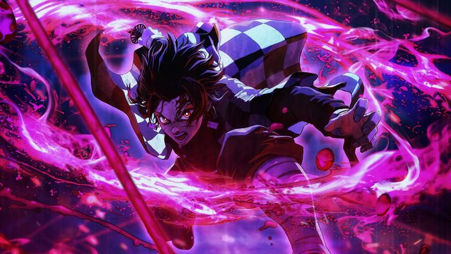
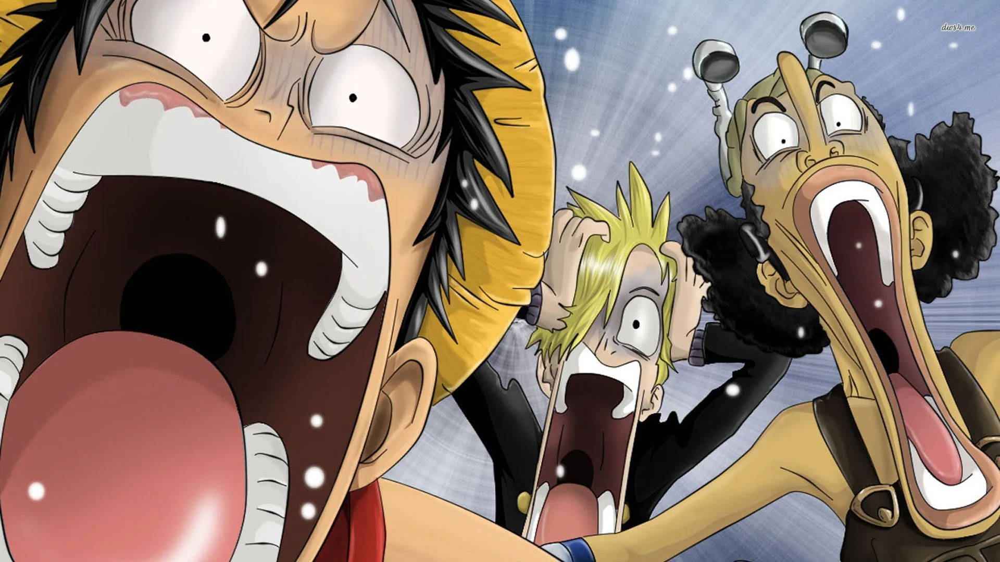

What Is Anish!
Anish serves as a haven for anime enthusiasts seeking comprehensive information and insights into the world of anime. It caters not only to seasoned fans but also to newcomers eager to embark on their anime journey. For those new to the medium, Anish provides valuable guidance, offering recommendations and suggestions on where to begin exploring the vast and diverse landscape of anime. Whether one seeks to delve into classic series, discover hidden gems, or stay updated on the latest releases, Anish strives to be a reliable source of knowledge and inspiration for all anime enthusiasts, fostering a vibrant community united by a shared passion for this captivating art form.

What Is Anime!
Anime refers to a style of animation that originated in Japan and has become popular worldwide. It encompasses a wide range of genres and themes, from action and adventure to romance, science fiction, fantasy, and more. Anime is characterized by its colorful artwork, fantastical themes, and vibrant characters. It's not limited to a specific age group and can cater to children, teenagers, and adults alike. Additionally, anime often includes complex storylines and character development, making it a rich and diverse form of entertainment.
Differences Between Anime and Animation!
Anime, originating from Japan, distinguishes itself through its vibrant art style, influenced by manga, with exaggerated expressions and intricate character designs. It explores diverse themes, often rooted in Japanese culture and societal issues, catering to a broad audience, particularly popular among teenagers and young adults worldwide. While sharing similarities in production processes with animation, anime's distinctiveness lies in its cultural specificity, serialized distribution, and global appeal, setting it apart as a unique form of animated entertainment.
